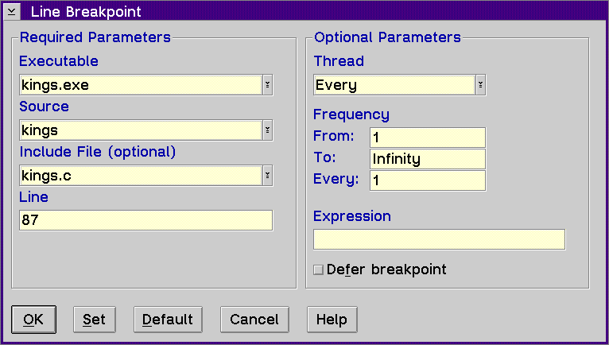

Displays the Line Breakpoint window, which allows you to set a line breakpoint to stop the execution of your program at a specific line number.

The Line Breakpoint window is divided into two group headings: Required Parameters and Optional Parameters.
The Required Parameters group heading contains the following:
To select a component from the Executable list:
To select a component from the Source list:
If the source you selected has include files with executable statements, then the File list displays all the file names that contain executable lines.
To set a line breakpoint, type the line number in the Line entry field. The breakpoint is set on the line number.
The Optional Parameters group heading contains the following:
To select a thread ID from the Thread list:
This field is used for location breakpoints, address breakpoints and load occurrence breakpoints. Type in a number to start activating the breakpoint the nth time the location is encountered.
This field is used for location breakpoints, address breakpoints and load occurrence breakpoints. Type in a number to stop activating the breakpoint after the nth time the location is encountered.
This field is used for location breakpoints, address breakpoints and load occurrence breakpoints. Type in a number to indicate how often the breakpoint should be activated within the From and To range.
If you are setting an address, function, or line breakpoint, you can also type in an expression. The execution of the program stops only if this condition tests true. For example, you could type the following:
(i==1) || (j==k) && (k!=5)
Note: Variables in a conditional expression associated with a function breakpoint are limited to any static or global variables that are known to the called function when the function is called. Local variables and automatic variables will not evaluate correctly.
The maximum length of the condition is 256 characters.
Enable the Defer breakpoint check box if you want to set a breakpoint in a module that is not currently loaded.
If you set a deferred line breakpoint and the line is located in a template, the debugger sets the line breakpoint in all of the templates when the module is loaded.
When a module is loaded and a deferred breakpoint has been set in the module, the state of the breakpoint changes from deferred to active. When a module is freed, any breakpoints that were set in the module change from the active state to deferred state.
If you enter an invalid source, file or line number, the debugger will be unable to activate the breakpoint when the module is loaded. Therefore, the invalid breakpoint will remain in the deferred state even after the module is loaded.